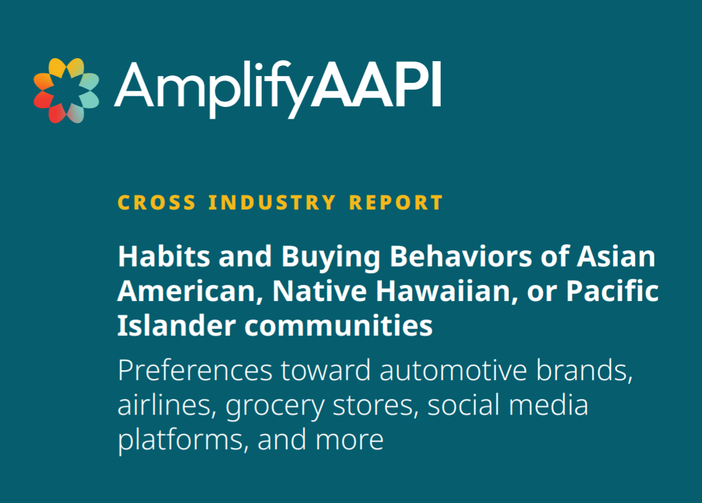
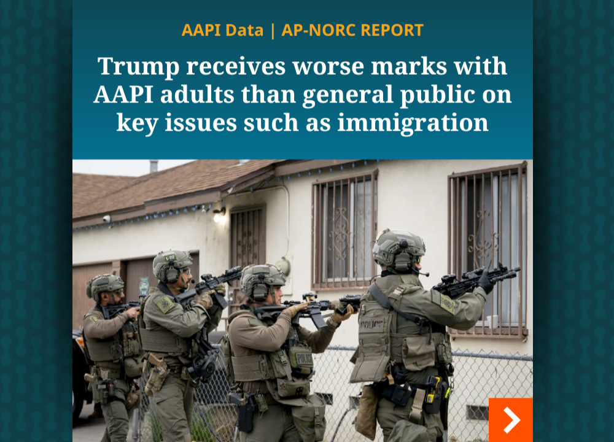
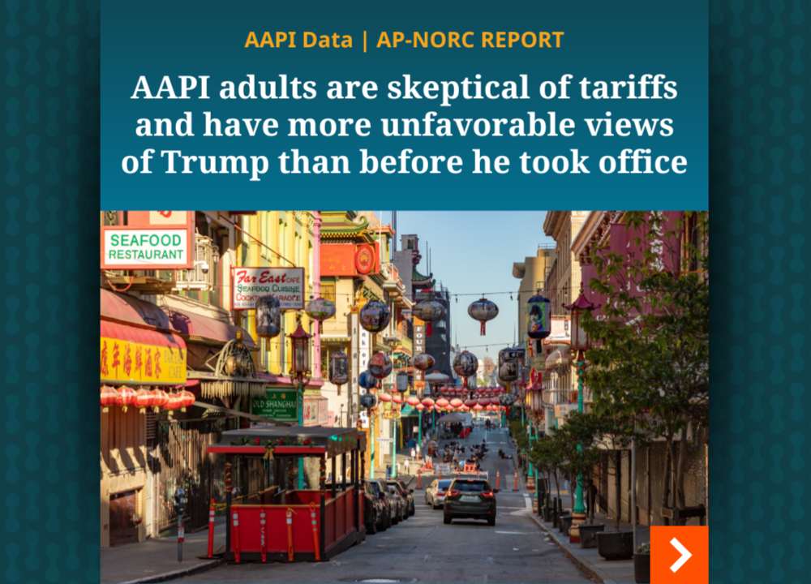
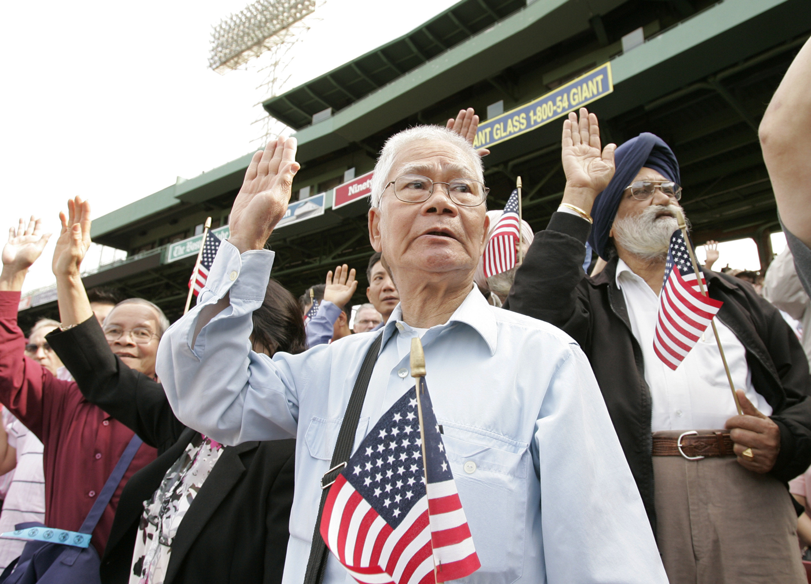
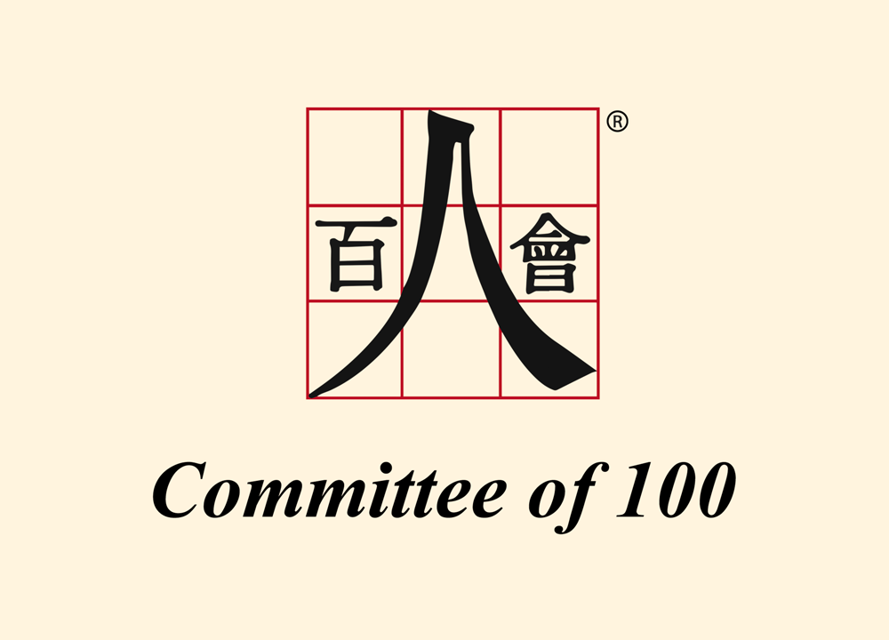
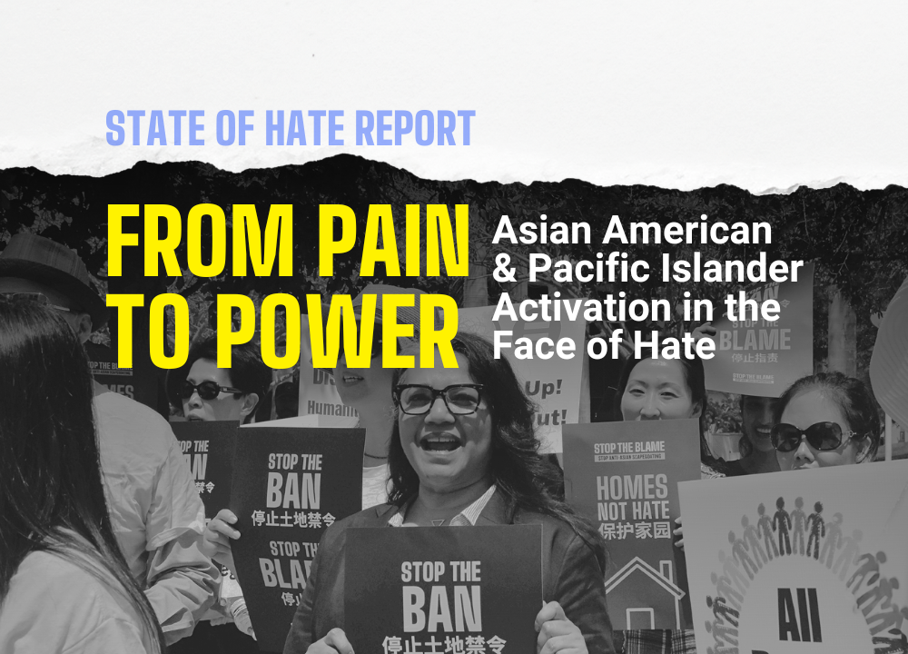
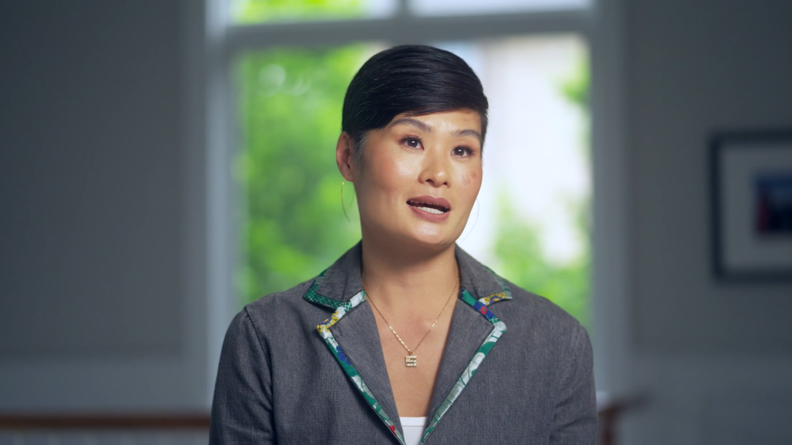

Amplify AAPI® provides trustworthy data on the needs, opinions, and experiences of the Asian American, Native Hawaiian, and Pacific Islander population.

Habits and buying behaviors of Asian Americans, Native Hawaiian, or Pacific Islander communities.

Trump receives worse marks with AAPI adults than general public on key issues.

AAPI adults are skeptical of tariffs and have more unfavorable views of Trump than before he took office.

A series of monthly polls, delivering regular insights on crucial issues, ranging from policy priorities and financial well-being to political views and civic engagement.

A survey done in partnership with Committee of 100 focused on the current politics and policy needs of the Chinese American population.

This report, done in partnership with Stop AAPI Hate, offers a comprehensive picture of the state of anti-Asian American and anti-Pacific Islander (anti-AA/PI) hate in 2023.
AANHPI communities are the fastest-growing minority in the United States.
of Total Adults
Asian American, Native Hawaiian, and Pacific Islanders make up over 6 percent of the nation’s population.
People in the U.S.
According to the 2020 census data, 20.6 Million people in the U.S. identify as Asian American, Native Hawaiian or Pacific Islander (not in combination with other races).
Estimated Population by 2060
Asian Americans are the fastest-growing racial and ethnic group in the U.S. and Native Hawaiians and Pacific Islanders are the third-fastest growing.

Video
“We all just want to feel like we belong,” says Stephanie Morimoto. Stephanie is the owner and CEO of Asutra, a health and wellness company. Here, she discusses how a research panel like Amplify AAPI can lead to greater AANHPI representation.
Video
“This is the next step toward understanding,” says Kevin Pang. Kevin is a writer, documentary filmmaker, and the editorial director for digital at America's Test Kitchen on PBS. Here, he shares that rich data can lead to deeper understanding of AANHPI communities.
Video
“We need data so we can help those who need our help,” says Nancy Chen. Nancy is a founding president of Chinese American Women in Action, a nonprofit dedicated to empowering Chinese American women through education, advocacy, networking, and mentoring.
AARP is a founding partner in the conception, design, and development of Amplify AAPI, providing both thought leadership, community expertise, and financial support.
NORC at the University of Chicago is an objective, non-profit partner for decision-makers who need research they can trust.
AARP is the nation's largest nonprofit, nonpartisan organization committed to empowering Americans to choose how they live as they age.